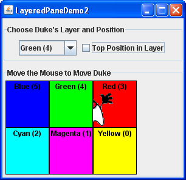

Lección: Usando Componentes Swing
Sección: Cómo Usar Varios Componentes
Cómo Usar Paneles Estratificados
Un panel estratificado es un contenedor de Swing que ofrece una tercera dimensión para el posicionamiento de componentes: profundidad, también conocida como orden Z. Cuando añade un componente a un panel estratificado, especifica su profundidad como un entero. Cuanto más alto el número, más cerca está el componente a la posición de "arriba" dentro del contenedor. Si el componente se superpone, los componentes "más cercanos" son dibujados por encima de los componentes en una profundidad más baja. La relación entre los componentes en la misma profundidad es determinada por sus posiciones dentro de la profundidad.
Nota:
El Contenendor de AWT tiene una IPA que le permite manipular el componente orden Z. Para más información, vea la Especificación de Foco de AWT.
Cada contenedor Swing que tiene un panel raíz ─ tal como
JFrame, JApplet,
JDialog, o JInternalFrame
─ automáticamente tiene un panel estratificado. La mayoría de los programas no usan
explícitamente el panel estratificado del panel raíz, así que esta sección no describirá eso. Puede encontrar
información sobre eso en El Panel Raíz, el cual ofrece un resumen, y
El Panel de Capas, el cual tiene más detalles. Esta sección le habla de
cómo crear su propio panel estratificado y usarlo en cualquier parte donde pueda usar un contenedor regular de
Swing.
Swing ofrece dos clases de paneles estratificados. El primero,
JLayeredPane, es la clase que los paneles raíz usan y es la clase usada por el ejemplo en
esta sección. El segundo, JDesktopPane, es una subclase de JLayeredPane que está
especializada para la tarea de mantener marcos internos. Para ejemplos de cómo usar
JDesktopPane, vea Cómo Usar Marcos Internos.
Aquí tiene una foto de una aplicación que crea un panel estratificado y coloca etiquetas solapadas y coloreadas a diferentes profundidades:

Intente esto:
-
Pulse el botón Lanza para ejecutar la Demo LayeredPane usando
Java™ Web Start (
descargue KDJ 7 o posterior). Alternativiamente, para compilar y ejecutar el ejemplo por usted
mismo, consulte el
the índice de ejemplos.

- Mueva el ratón alrededor de la parte baja de la ventana. La imagen de Duke se arrastra detrás de las etiquetas verde y roja, pero enfrente de las otras tres etiquetas.
- Use el cuadro combinado en la parte superior de la ventana para cambiar la profundidad de Duke. Use la casilla de verificación para establecer si Duke está en la posición de arriba ─ posición 0 ─ dentro de la profundidad actual.
Aquí está el codigo de
LayeredPaneDemo.java que crea el panel estratificado:
layeredPane = new JLayeredPane();
layeredPane.setPreferredSize(new Dimension(300, 310));
layeredPane.setBorder(BorderFactory.createTitledBorder(
"Move the Mouse to Move Duke"));
layeredPane.addMouseMotionListener(new MouseMotionAdapter() {
...
});
El código usa el único constructor de JLayeredPane ─ el constructor sin argumentos
─ para crear el panel estratificado. El resto del código usa los métodos heredados de las
superclases para dar al panel estratificado un tamaño preferido y un borde, y añade un oyente de movimiento del
ratón a él. El oyente de movimiento del ratón sólo mueve la imagen de Duke en respuesta al movimiento del ratón.
Aunque no mostramos el código aquí, el ejemplo añade el panel estratificado al panel de contenido del marco.
Como le mostraremos un poco más tarde, usted añade componentes a un panel estratificado usando un método
add. Cuando añade un componente a un panel estratificado, especifica la profundidad del componente,
y opcionalmente, su posición dentro de su profundidad. El panel estratificado en el programa de demostración
contiene seis etiquetas ─ cinco etiquetas coloreadas y una sexta que visualiza la imagen de Duke.
Como el programa demuestra, tanto la profundidad de un componente como su ubicación dentro de esa profundidad
pueden cambiar dinámicamente.
El resto de esta sección cubre estos tópicos:
- Adición de Componentes y Configuración de la Profundidad del Componente
- Establecimiento de una Posición de Componente Dentro de su Profundidad
- Colocación de Componentes en un Panel Estratificado
- La IPA del Panel Estratificado
- Ejemplos que Usan Paneles Estratificados
Adición de Componentes y Configuración de la Profundidad del Componente
Aquí está el código del programa de ejemplo que añade las etiquetas coloreadas al panel estratificado:
for (int i = 0; i < ...número de etiquetas...; i++) {
JLabel label = createColoredLabel(...);
layeredPane.add(label, new Integer(i));
...
}
Puede buscar la implementación del método createColoredLabel en el código fuente del programa. Tan
sólo crea una JLabel opaca inicializada con un color de fondo, un borde, algo de texto, y un
tamaño.
El programa de ejemplo usa una versión de dos argumentos del método add. El primer argumento es el
componente a añadir, el segundo es un objeto Integer, especificadno la profundidad. Este programa
usa la variable de iteración del bucle for para especificar las profundidades. Los valores reales
no importan mucho. Lo que importa son los valores relativos de sus profundidades y en que usted sea consistente
con su programa en cómo usa cada profundidad.
Nota:
Si usa el panel estratificado del panel raiz, asegúrese de usar sus convenciones de profundidad. Diríjase a
El Panel de Capas para más detalles. Esta sección le muestra cómo
modificar LayeredPaneDemo para usar el panel estratificado del panel raíz. Con las
modificaciones, puede ver como el arrastre de la imagen de Duke se relaciona con el cuadro combinado en el
panel de control.
Como puede ver en el programa de ejemplo, si los componentes se solapan, los componentes de mayor profundidad
están arriba de los componentes con menor profundidad. Para cambiar la profundidad de un componente dinámicamente,
use el método setLayer. En este ejemplo, el usuario puee cambiar la capa de Duke haciendo una
selección en un cuadro combinado. Aquí tiene el método actionPerformed del oyente de acción
registrado en el cuadro combinado:
public void actionPerformed(ActionEvent e) {
int position = onTop.isSelected() ? 0 : 1;
layeredPane.setLayer(dukeLabel,
layerList.getSelectedIndex(),
position);
}
El método setLayer usado aquí toma tres argumentos: el componente cuya profundidad va a ser fijada,
la nueva profundidad, y la posición en esa profundidad. JLayeredPane tiene una versión de dos
argumentos de setLayer que toma sólo el componente y la nueva profundidad. Ese método coloca el
componente en la posición de abajo en su profundidad.
Una nota de precaución:
Cuando añade un componente a un panel estratificado usted especifica la capa con un Integer.
Cuando usa setLayer para cambiar la capa de un componente, usted usa un int.
Usted podría pensar que si usted usa un int en vez de un Integer
con el método add, el compilador se quejaría o su programa lanzaría una excepción de argumento
ilegal. Pero el compilador no dirá nada, lo cual resulta en un
problema común de los paneles estratificados. Puede usar las tablas
del IPA al final de esta sección para comprobar los tipos de los argumentos y valores devueltos para los
métodos que tratan con capas.
Establecimiento de una posición de componente dentro de su profundidad
El código siguiente crea la etiqueta que muestra la imagen de Duke, y entonces añade la etiqueta al panel estratificado.
final ImageIcon icon = createImageIcon("images/dukeWaveRed.gif");
...
dukeLabel = new JLabel(icon);
...
dukeLabel.setBounds(15, 225,
icon.getIconWidth(),
icon.getIconHeight());
...
layeredPane.add(dukeLabel, new Integer(2), 0);
Este código usa la versión de tres argumentos del método add. El tercer argumento especifica la
posición de la etiqueta de Duke dentro de su profundidad, lo cual determina la relación del componente con otros
componentes en la misma profundidad.
Las posiciones son especificadas con un int entre -1 y (n - 1), donde n es el
número de componentes en esa profundidad. A diferencia de los números de capa, cuanto más pequeño es el número de
posición, mayor es el componente dentro de su profundidad. Usar -1 es lo mismo que usar n - 1; ello
indica la posición más baja. Usar 0 espeficia que el componente estará en la posición más arriba dentro de su
profundidad. Como la siguiente figura muestra, con la excepción de -1, un número de posición más bajo indica una
posición más alta dentro de una profundidad.

La posición de un componente en su capa puede cambiar dinámicamente. En el ejemplo, puede usar la casilla de
verificación para determinar si la etiqueta Duke está en la posición de arriba en su profundidad. Aquí tiene el
método actionPerformed para el oyente de acción registrado en la casilla de verificación:
public void actionPerformed(ActionEvent e) {
if (onTop.isSelected())
layeredPane.moveToFront(dukeLabel);
else
layeredPane.moveToBack(dukeLabel);
}
Cuando el usuario selecciona la casilla de verificación, el método moveToFront mueva Duke al
frente (posición 0). Y cuando el usuario deselecciona la casilla de verificación, Duke se mueve atrás con el
método moveToBack. Puede también usar el método setPosition o la versión de tres
argumentos de setLayer para cambiar la posición de un componente.
Colocación de Componentes en un Panel Estratificado
Por defecto un panel estratificado no tiene gestor de disposicón. Esto significa que generalmente tendrá que escribir el código que posicione y dimensione los componentes que coloca el un panel estratificado.
El ejemplo usa el método setBounds para establecer el tamaño y posición de cada una de las
etiquetas:
dukeLabel.setBounds(15, 225,
icon.getIconWidth(),
icon.getIconHeight());
...
label.setBounds(origin.x, origin.y, 140, 140);
Cuando el usuario mueve el ratón alrededor, el programa llama a setPosition para cambiar la
posición de Duke:
dukeLabel.setLocation(e.getX()-XFUDGE, e.getY()-YFUDGE);
Aunque un panel estratificado no tenga un gestor de disposición por defecto, usted puede aún asignar un gestor
de disposición al panel estratificado. Todos los gestores de diseño proporcionados por la plataforma Java
organizan los componentes como si estuvieran todos en una capa. Aquí tiene una versión de la demo previa que
establece el gestor de disposición del panel estratificado a una instancia de GridLayout, usando
el gestor de disposición para colocar seis etiquetas de color.

Puede encontrar el código para este programa en
LayeredPaneDemo2.java. Puede
ejecutar LayeredPaneDemo2 (
descargue KDJ 7 o posterior).
Si quiere compilar el ejemplo, consulte el
índice de ejemplos para una lista de todos los ficheros necesarios.
Muchos programas usan contenedores intermedios (tales como paneles) y sus gestores de disposición para colocar componentes en la misma capa, pero usan posicionamiento absoluto para colocar componentes en capas diferentes. Para más información sobre el posicionamiento absoluto, vea Haciendo Sin un Gestor de Diseño (Posicionamiento Absoluto).
La IPA del Panel Estratificado
Las siguientes tablas listan los constructores y métodos comunmente usados de JLayeredPane. Otros
métodos que son más probables que invoque sobre un objeto JLayeredPane son aquellos que heredan
desde sus superclases, tales como setBorder, setPreferredSize, etc. Vea
La IPA de JComponent para tablas de métodos heredados comunmente usados.
La IPA para usar paneles estratificados se dividen en estas categorías:
- Crear u Obtener un Panel Estratificado
- Componentes de Estratificación
- Ajuste de las Posiciones Intra-Capa del Componente
| Método o Constructor | Propósito |
|---|---|
| JLayeredPane() | Crea un panel estratificado. |
|
JLayeredPane getLayeredPane()
(en JApplet, JDialog, JFrame, y
JInternalFrame)
|
Obtiene el panel estratificado automático en un applet, diálogo, marco, o marco interno. |
| Método | Propósito |
|---|---|
|
void add(Component)
void add(Component, Object) void add(Component, Object, int) |
Añade el componente especificado al panel estratificado. El segundo argumento, cuando está presente, es
un Integer que indica la capa. El tercer argumento, cuando está presente, indica la
posición del componente dentro de su capa. Si usa la versión de un argumento de este método, el
componente es añadido a la capa 0. si usa la versión de uno o dos argumentos de este método, el
componente es colocado debajo de todos los demás componentes actualmente en la misma capa.
|
|
void setLayer(Component, int)
void setLayer(Component, int, int) |
Cambia la capa del componente. El segundo argumento indica la capa. El tercer argumento, cuando está presente, indica la posición del componente en su capa. |
|
int getLayer(Component)
int getLayer(JComponent) |
Obtiene la capa para el componente especificado. |
| int getComponentCountInLayer(int) | Obtiene el número de componentes en la capa especificada. El valor devuelto por este método puede ser útil para calcular los valores de posición. |
| Component[] getComponentsInLayer(int) | Obtiene una matriz de todos los componentes en la capa especificada. |
|
int highestLayer()
int lowestLayer() |
Calcula la capa más alta o más baja actualmente en uso. |
| Método | Propósito |
|---|---|
|
void setPosition(Component, int)
int getPosition(Component) |
Establece u obtiene la posición para los componentes especificados dentro de su capa. |
|
void moveToFront(Component)
void moveToBack(Component) |
Mueve el componente especificado al frente o atrás en su capa. |
Ejemplos que Usan Paneles Estratificados
Esta tabla muestra los ejemplos que usan JLayeredPane y donde esos ejemplos están descritos.
| Ejemplo | Dónde se Describió | Notas |
|---|---|---|
LayeredPaneDemo
|
Esta sección | Ilustra las capas y las posiciones entre-capas de un JLayeredPane. |
LayeredPaneDemo2
|
Esta sección | Usa un gestor de disposición para ayudar a colocar los componentes en un panel estratificado. |
RootLayeredPaneDemo
|
El Panel Estratificado |
Una versión de
LayeredPaneDemo modificada para usar el panel estratificado del panel raíz.
|
InternalFrameDemo
|
Cómo Usar los Marcos Internos | Usa un JDesktopFrame para gestionar marcos internos. |